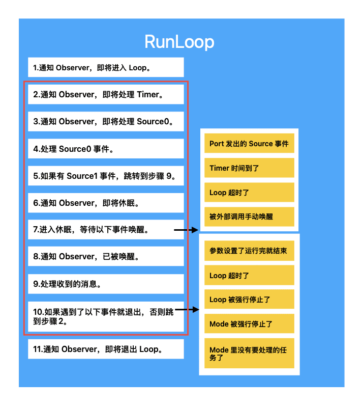
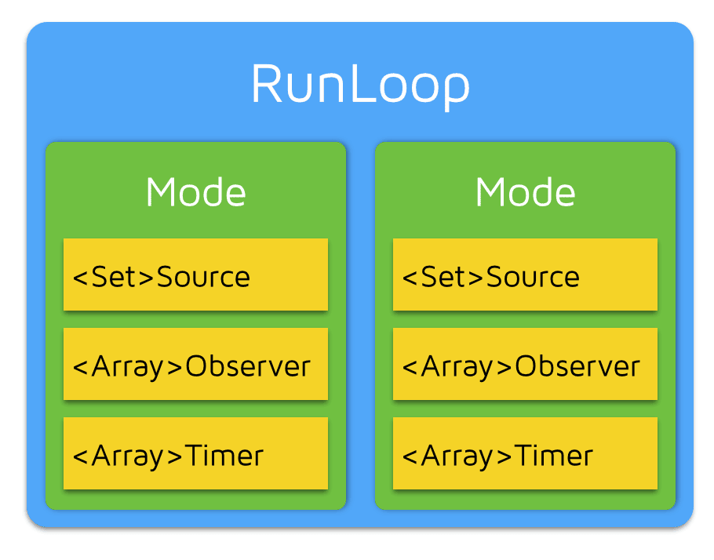

由 布多(budo) 发布于 2024-04-28 • 最后更新于 2025-03-21
前言
RunLoop 是 iOS 开发中的一个基础概念，苹果有许多功能都依赖于 RunLoop，例如线程中的自动释放池、NSTimer、系统事件响应、屏幕刷新等。本文将深入剖析 iOS 中 RunLoop 的内部实现细节，帮助你更好地理解这一机制。
什么是 Even Loop
在讨论 RunLoop 之前，先了解一下线程的基本概念。通常，线程执行完一个任务后就会退出，要重新执行任务只能再创建一个新线程。但如果我们希望线程在处理完任务后不退出，而是等待并处理新的任务，就需要一种机制来保持线程的活动状态，这就是 Even Loop（事件循环）。
在 iOS 中，这个机制由 RunLoop 实现。它是一个持续运行的循环，负责管理线程中的事件和消息，确保线程在没有任务时进入休眠状态，在有任务时被唤醒并处理。
RunLoop 的工作原理
RunLoop 本质上是一个对象，它管理需要处理的事件。线程启动 RunLoop 后，会一直处理「接受消息 -> 处理消息 -> 等待消息」的循环中，实现逻辑大致如下：
void startRunLoop() {
do {
var message = get_next_message();
process_message(message);
} while (message != quit);
}
|
RunLoop 的实现细节
在 iOS 中，RunLoop 通过两个对象提供：NSRunLoop 和 CFRunLoopRef。其中，NSRunLoop 是 CFRunLoopRef 的封装，提供了面向对象的 API。
RunLoop 被包含在开源项目 Core Foundation 中，你可以下载查看。
本文使用的 Core Foundation 版本是 CF-1153.18，为了方便阅读，我对代码样式和排版略作了修改以及删减了一些不影响主逻辑的冗余代码。
RunLoop 入口
首先看看 CFRunLoopRun 和 CFRunLoopRunInMode 的实现，这两个函数负责启动 RunLoop：
void CFRunLoopRun(void) {
int32_t result;
do {
result = CFRunLoopRunSpecific(CFRunLoopGetCurrent(), kCFRunLoopDefaultMode, 1.0e10, false);
} while (kCFRunLoopRunStopped != result && kCFRunLoopRunFinished != result);
}
SInt32 CFRunLoopRunInMode(CFStringRef modeName,
CFTimeInterval seconds,
Boolean returnAfterSourceHandled) {
return CFRunLoopRunSpecific(CFRunLoopGetCurrent(),
modeName,
seconds,
returnAfterSourceHandled);
}
|
通过调用 CFRunLoopRunSpecific，RunLoop 会进入具体的模式进行运行，直到满足退出的条件。
接下来的关键函数是 CFRunLoopRunSpecific，它会获取指定的 Mode，然后进入 RunLoop，相关代码整理后如下所示：
SInt32 CFRunLoopRunSpecific(CFRunLoopRef rl,
CFStringRef modeName,
CFTimeInterval seconds,
Boolean returnAfterSourceHandled) {
CFRunLoopModeRef currentMode = __CFRunLoopFindMode(rl, modeName, false);
if (NULL == currentMode ||
__CFRunLoopModeIsEmpty(rl, currentMode, rl->_currentMode)) {
return kCFRunLoopRunFinished;
}
volatile _per_run_data *previousPerRun = __CFRunLoopPushPerRunData(rl);
CFRunLoopModeRef previousMode = rl->_currentMode;
rl->_currentMode = currentMode;
int32_t result = kCFRunLoopRunFinished;
if (currentMode->_observerMask & kCFRunLoopEntry) {
__CFRunLoopDoObservers(rl, currentMode, kCFRunLoopEntry);
}
result = __CFRunLoopRun(rl, currentMode, seconds, returnAfterSourceHandled, previousMode);
if (currentMode->_observerMask & kCFRunLoopExit) {
__CFRunLoopDoObservers(rl, currentMode, kCFRunLoopExit);
}
__CFRunLoopPopPerRunData(rl, previousPerRun);
rl->_currentMode = previousMode;
return result;
}
|
RunLoop 核心
在 __CFRunLoopRun 中，RunLoop 会进入 do while 循环，不断检查并处理事件，直到满足退出条件（超时、手动停止等）。核心的实现依赖于 mach_msg 函数，系统会调用这个函数将线程置于休眠状态，等待消息的到来，每当有事件（例如来自 mach_port 的消息或定时器触发）时，RunLoop 会被唤醒处理相关事件。相关代码整理后如下所示（函数有点长，不想看可以跳过，后面有解释）：
static int32_t __CFRunLoopRun(CFRunLoopRef rl,
CFRunLoopModeRef rlm,
CFTimeInterval seconds,
Boolean stopAfterHandle,
CFRunLoopModeRef previousMode) {
uint64_t startTSR = mach_absolute_time();
mach_port_name_t dispatchPort = MACH_PORT_NULL;
dispatch_source_t timeout_timer = NULL;
struct __timeout_context *timeout_context = (struct __timeout_context *)malloc(sizeof(*timeout_context));
if (seconds <= 0.0) {
timeout_context->termTSR = 0ULL;
} else if (seconds <= TIMER_INTERVAL_LIMIT) {
timeout_context->termTSR = startTSR + __CFTimeIntervalToTSR(seconds);
dispatch_source_set_event_handler_f(timeout_timer, __CFRunLoopTimeout);
} else {
timeout_context->termTSR = UINT64_MAX;
}
Boolean didDispatchPortLastTime = true;
int32_t retVal = 0;
do {
voucher_mach_msg_state_t voucherState = VOUCHER_MACH_MSG_STATE_UNCHANGED;
voucher_t voucherCopy = NULL;
uint8_t msg_buffer[3 * 1024];
mach_msg_header_t *msg = NULL;
mach_port_t livePort = MACH_PORT_NULL;
__CFPortSet waitSet = rlm->_portSet;
if (rlm->_observerMask & kCFRunLoopBeforeTimers) {
__CFRunLoopDoObservers(rl, rlm, kCFRunLoopBeforeTimers);
}
if (rlm->_observerMask & kCFRunLoopBeforeSources) {
__CFRunLoopDoObservers(rl, rlm, kCFRunLoopBeforeSources);
}
__CFRunLoopDoBlocks(rl, rlm);
Boolean sourceHandledThisLoop = __CFRunLoopDoSources0(rl, rlm, stopAfterHandle);
if (sourceHandledThisLoop) {
__CFRunLoopDoBlocks(rl, rlm);
}
if (MACH_PORT_NULL != dispatchPort && !didDispatchPortLastTime) {
msg = (mach_msg_header_t *)msg_buffer;
if (__CFRunLoopServiceMachPort(dispatchPort, &msg, sizeof(msg_buffer), &livePort, 0, &voucherState, NULL)) {
goto handle_msg;
}
}
didDispatchPortLastTime = false;
if (rlm->_observerMask & kCFRunLoopBeforeWaiting) {
__CFRunLoopDoObservers(rl, rlm, kCFRunLoopBeforeWaiting);
}
msg = (mach_msg_header_t *)msg_buffer;
__CFRunLoopServiceMachPort(waitSet, &msg, sizeof(msg_buffer), &livePort, TIMEOUT_INFINITY, &voucherState, &voucherCopy);
if (rlm->_observerMask & kCFRunLoopAfterWaiting) {
__CFRunLoopDoObservers(rl, rlm, kCFRunLoopAfterWaiting);
}
handle_msg:;
if (livePort == rlm->_timerPort) {
if (!__CFRunLoopDoTimers(rl, rlm, mach_absolute_time())) {
__CFArmNextTimerInMode(rlm, rl);
}
}
else if (livePort == dispatchPort) {
__CFRUNLOOP_IS_SERVICING_THE_MAIN_DISPATCH_QUEUE__(msg);
sourceHandledThisLoop = true;
didDispatchPortLastTime = true;
}
else {
CFRunLoopSourceRef rls = __CFRunLoopModeFindSourceForMachPort(rl, rlm, livePort);
if (rls) {
mach_msg_header_t *reply = NULL;
sourceHandledThisLoop = __CFRunLoopDoSource1(rl, rlm, rls, msg, msg->msgh_size, &reply) || sourceHandledThisLoop;
if (NULL != reply) {
(void)mach_msg(reply, MACH_SEND_MSG, reply->msgh_size, 0, MACH_PORT_NULL, 0, MACH_PORT_NULL);
}
}
}
__CFRunLoopDoBlocks(rl, rlm);
if (sourceHandledThisLoop && stopAfterHandle) {
retVal = kCFRunLoopRunHandledSource;
}
else if (timeout_context->termTSR < mach_absolute_time()) {
retVal = kCFRunLoopRunTimedOut;
}
else if (__CFRunLoopIsStopped(rl)) {
retVal = kCFRunLoopRunStopped;
}
else if (rlm->_stopped) {
rlm->_stopped = false;
retVal = kCFRunLoopRunStopped;
}
else if (__CFRunLoopModeIsEmpty(rl, rlm, previousMode)) {
retVal = kCFRunLoopRunFinished;
}
} while (0 == retVal);
return retVal;
}
|
从上面的代码中不难发现，RunLoop 内部其实就是一个 do while 循环，当线程启动 RunLoop 后，就会一直处于这个循环里，有任务时就处理任务，每次处理完 Source1 任务后都会判断一下是否满足退出条件（超时、强行停止、任务列表为空等），如果不满足就进入下一轮。
RunLoop 的核心实现依赖于 mach_msg()，这个函数在 __CFRunLoopServiceMachPort 内部调用。RunLoop 调用 mach_msg() 之后，内核就会将线程置于休眠状态，直到有 port 发送消息或定时器触发。
你可以使用 Xcode 运行一个 iOS 项目，然后在 APP 静止时点击暂停，此时你会看到主线程调用栈停留在一个叫做 mach_msg2_trap() 的函数中。
我画了一个 RunLoop 运行流程图，请参考下图：

RunLoop 与 RunLoopMode
一个 RunLoop 可能会包含多个 Mode，每个 Mode 又可能包含若干个 Source、Timer、Observer。相关代码整理后如下所示：
typedef struct __CFRunLoop *CFRunLoopRef;
struct __CFRunLoop {
CFMutableSetRef _commonModes;
CFMutableSetRef _commonModeItems;
CFRunLoopModeRef _currentMode;
CFMutableSetRef _modes;
};
typedef struct __CFRunLoopMode *CFRunLoopModeRef;
struct __CFRunLoopMode {
CFStringRef _name;
CFMutableSetRef _sources0;
CFMutableSetRef _sources1;
CFMutableArrayRef _observers;
CFMutableArrayRef _timers;
};
|
RunLoop 与 Mode 的关系如下图所示：

RunLoop 每次只能指定一个 Mode 运行，这个 Mode 被称为 currentMode。如果需要切换 Mode，只能退出 Loop，然后重新指定 Mode 运行。这样做的目的是为了将不同的 Source、Timer、Observer 分隔开，避免它们相互干扰。
Mode 内部有以下三种类型的事件：
CFRunLoopSourceRef 表示所有 source0 和 source1 事件。
- source0 只包含一个函数指针回调，它不能主动触发事件，只能先调用
CFRunLoopSourceSignal(source) 将这个 Source 标记为待处理，然后调用 CFRunLoopWakeUp(runloop) 唤醒 RunLoop 去处理被标记的事件。
- source1 是 mach port 发出的事件，被用于通过内核和其它进程相互发送消息，这种事件可以主动唤醒 RunLoop。
CFRunLoopTimerRef 是一个定时器事件，它和 NSTimer 是免费桥接的，当它被加入到 RunLoop 后，RunLoop 会在对应的时间点注册事件，当时间点到达时 Loop 会被唤醒并处理这个事件。
CFRunLoopObserverRef 是一个观察者事件，当 RunLoop 的状态发生变化时，开发者可以通过注册 Observer 来响应这些变化，可以观察的状态有以下 6 个：
typedef CF_OPTIONS(CFOptionFlags, CFRunLoopActivity) {
kCFRunLoopEntry = (1UL << 0),
kCFRunLoopBeforeTimers = (1UL << 1),
kCFRunLoopBeforeSources = (1UL << 2),
kCFRunLoopBeforeWaiting = (1UL << 5),
kCFRunLoopAfterWaiting = (1UL << 6),
kCFRunLoopExit = (1UL << 7),
};
|
以上的 Source、Timer、Observer 统称为 mode item，一个 item 不能重复加入同一个 Mode，但是可以同时加入多个 mode 中，另外，如果 mode 里没有 item，则 RunLoop 会直接退出，不会进入到循环中。
关于 CommonModes
CommonModes 是一个特殊的概念，其允许一个事件同时在多个 Mode 中触发。通过 CFRunLoopAddCommonMode 函数，可以将某个 Mode 标记为 “Common” 模式，这样该模式下的事件就会自动同步到其它 Mode 中去。例如，我们可以在 CFRunLoopAddCommonMode 中添加一个定时器，这样它就能同时在多个模式下运行。
相关实现代码精简后如下所示（不想看可以跳过，后面有解释）：
void CFRunLoopAddObserver(CFRunLoopRef rl, CFRunLoopObserverRef rlo, CFStringRef modeName) {
CFRunLoopModeRef rlm;
if (modeName == kCFRunLoopCommonModes) {
CFSetRef set = rl->_commonModes ? CFSetCreateCopy(kCFAllocatorSystemDefault, rl->_commonModes) : NULL;
if (NULL == rl->_commonModeItems) {
rl->_commonModeItems = CFSetCreateMutable(kCFAllocatorSystemDefault, 0, &kCFTypeSetCallBacks);
}
CFSetAddValue(rl->_commonModeItems, rlo);
if (NULL != set) {
CFTypeRef context[2] = {rl, rlo};
CFSetApplyFunction(set, (__CFRunLoopAddItemToCommonModes), (void *)context);
CFRelease(set);
}
}
}
void CFRunLoopAddCommonMode(CFRunLoopRef rl, CFStringRef modeName) {
if (!CFSetContainsValue(rl->_commonModes, modeName)) {
CFSetRef set = rl->_commonModeItems ? CFSetCreateCopy(kCFAllocatorSystemDefault, rl->_commonModeItems) : NULL;
CFSetAddValue(rl->_commonModes, modeName);
if (NULL != set) {
CFTypeRef context[2] = {rl, modeName};
CFSetApplyFunction(set, (__CFRunLoopAddItemsToCommonMode), (void *)context);
CFRelease(set);
}
}
}
|
上面提到的 CFRunLoopAddObserver 函数，还有两个函数和它类似：CFRunLoopAddTimer 和 CFRunLoopAddSource，它们的内部实现原理基本一致，所以我只介绍了 CFRunLoopAddObserver。
当你往 NSRunLoopCommonModes 中添加一个事件时，系统会拿到 _commonModes 并遍历其每个 Mode，然后为其添加这个事件。
当你调用 CFRunLoopAddCommonMode 将某个 Mode 标记为 “Common” 模式时，系统会取出这个 Mode 中的所有事件，然后遍历 _commonModes 并给每个 Mode 添加这些事件。
RunLoop 与线程的关系
每个线程都有自己独立的 RunLoop，iOS 不允许我们创建 RunLoop，但提供了两个函数来获取当前线程和主线程的 RunLoop：
CFRunLoopRef CFRunLoopGetMain(void) {
static CFRunLoopRef __main = NULL;
if (!__main) __main = _CFRunLoopGet0(pthread_main_thread_np());
return __main;
}
CFRunLoopRef CFRunLoopGetCurrent(void) {
CFRunLoopRef rl = (CFRunLoopRef)_CFGetTSD(__CFTSDKeyRunLoop);
if (rl) return rl;
return _CFRunLoopGet0(pthread_self());
}
static CFMutableDictionaryRef __CFRunLoops = NULL;
CF_EXPORT CFRunLoopRef _CFRunLoopGet0(pthread_t t) {
if (!__CFRunLoops) {
CFMutableDictionaryRef dict = CFDictionaryCreateMutable(kCFAllocatorSystemDefault, 0,
NULL, &kCFTypeDictionaryValueCallBacks);
CFRunLoopRef mainLoop = __CFRunLoopCreate(pthread_main_thread_np());
CFDictionarySetValue(dict, pthreadPointer(pthread_main_thread_np()), mainLoop);
}
CFRunLoopRef loop = (CFRunLoopRef)CFDictionaryGetValue(__CFRunLoops, pthreadPointer(t));
if (!loop) {
CFRunLoopRef newLoop = __CFRunLoopCreate(t);
CFDictionarySetValue(__CFRunLoops, pthreadPointer(t), newLoop);
loop = newLoop;
}
if (pthread_equal(t, pthread_self())) {
_CFSetTSD(__CFTSDKeyRunLoop, (void *)loop, NULL);
if (0 == _CFGetTSD(__CFTSDKeyRunLoopCntr)) {
_CFSetTSD(__CFTSDKeyRunLoopCntr,
(void *)(PTHREAD_DESTRUCTOR_ITERATIONS-1),
(void (*)(void *))__CFFinalizeRunLoop);
}
}
return loop;
}
|
从上面的代码中不难发现，线程和 RunLoop 的关系是一一对应的，其关系保存在一个全局字典中。另外，iOS 会为每个线程懒加载 RunLoop 对象，并在线程销毁时自动释放它。
我们只能获取当前线程的 RunLoop 对象（主线程的 RunLoop 除外）。
苹果利用 RunLoop 实现的功能
AutoreleasePool 与 RunLoop
网络上有一些这方面相关的旧文章，他们会告诉你：iOS 在 APP 启动后会往主线程的 RunLoop 里注册多个 Observer，用来监听以下三种状态：
即将进入 RunLoop：创建 AutoreleasePool。
RunLoop 准备休眠：释放之前创建的 AutoreleasePool，然后创建一个新的 AutoreleasePool。
RunLoop 即将退出：释放之前创建的 AutoreleasePool。
但是，根据我的调试发现，新的 RunLoop 已经不是上述逻辑了。系统会在每个任务的执行前后自动插入相关代码来实现 AutoreleasePool 的创建和释放操作，而不是等到线程休眠前才释放。
关于 AutoreleasePool 的更多细节，请阅读我写的另一篇文章：AutoreleasePool：iOS 内存管理乐章中的隐秘旋律
NSTimer 与 RunLoop
iOS 中的 NSTimer 和 RunLoop 中的 CFRunLoopTimerRef 是免费桥接的。当你添加一个 Timer 到 RunLoop 时，系统会自动在下一个时间点注册事件，同时，为了节省资源，RunLoop 并不会在非常准确的时间点回调 Timer，Timer 有个属性叫 tolerance，表示当时间点到达后，容许有多少误差。
如果某个时间点错过了，比如我创建了一个 1 秒执行一次的 Timer，但 RunLoop 执行了一段逻辑消耗了 5 秒，此时，RunLoop 会在第 6 秒的时候回调 Timer，执行这一次事件以及上一次的事件。测试结果如下：
16:46:19: 定时器1
16:46:20: 定时器2
16:46:26: 定时器3
16:46:26: 定时器4
16:46:27: 定时器5
16:46:28: 定时器6
|
注意 “定时器3” 和 “定时器4” 这两个事件，它们的执行时间都是第 26 秒，其中 “定时器3” 本来是第 21 秒应该执行的事件，但是那个时间点 RunLoop 没空，所以它被推迟到了第 26 秒和 “定时器4” 这个事件一起执行并输出。从这个方面也能看出来，当 RunLoop 繁忙的时候，NSTimer 可能会出现调用不及时的现象。
当你调用 NSObject 的 performSelecter:afterDelay: 后，系统会自动创建一个 NSTimer 并添加到当前线程的 RunLoop 中。如果当前线程没有 RunLoop 的话，则这个方法就会失效（子线程默认没有 RunLoop）。
注意，调用 performSelector:onThread: 时，系统也会自动创建一个 NSTimer，所以，如果对应线程没有 RunLoop 的话该方法也会失效。
GCD 与 RunLoop
GCD 和 RunLoop 一般情况下都没有交集，但是当你在子线程调用了 dispatch_async(dispatch_get_main_queue(), block) 时，GCD 会向主线程的 RunLoop 发送消息，此时主线程的 RunLoop 会被唤醒调用 __CFRUNLOOP_IS_SERVICING_THE_MAIN_DISPATCH_QUEUE__() 来处理这个事件。需要注意的是，只有从子线程回到主线程才会使用 RunLoop 处理，从子线程A到子线程B是不会使用目标线程的 RunLoop 来处理的。
我们能利用 RunLoop 干什么
APP 卡顿监控
其实现原理是往主线程的 RunLoop 中注册一个 Observer 监听所有状态，然后在回调中开启一个子线程用来判断主线程是否发生了卡顿，判断的逻辑大致是，如果 RunLoop 在某些状态下持续时间过长（一般是 60 ms），则判定为卡顿。如果你想了解更多细节，请查看我写的这个项目：WXLLagMonitoring。
线程保活
有时候我们可能需要频繁的在子线程中执行一些代码逻辑，如果每次执行都开启一个新线程，可能会带来一些不必要的性能损耗。如果我们能让这个子线程像主线程一样，有任务的时候处理任务，没任务的时候就休眠就好了。如果你想了解更多实现细节，请查看我写的这个项目：WXLThread。
性能优化
比如，你可以将多次操作合并成一次操作。其逻辑大致是监听 RunLoop 即将进入休眠的状态，在休眠之前将所有操作合并成一次操作，系统的界面刷新就是这个原理，你在更新 UI 视图后，系统并不会立马更新，而是在 RunLoop 休眠之前将这些更新操作合并成一次更新。
有个框架 FDTemplateLayoutCell 就用到了 RunLoop，它会在 NSDefaultRunLoopMode 模式下注册一个 Observer 并观察即将休眠的状态，在回调中会执行预加载逻辑。
RunLoop 相关疑惑
CommonModes 中的任务是如何同步的？
当你执行这样一行代码：[[NSRunLoop currentRunLoop] addTimer:timer forMode:NSRunLoopCommonModes] 时，系统是如何让 timer 同时在 NSDefaultRunLoopMode 和 UITrackingRunLoopMode 中运行的？
网络上有些这方面相关的旧文章，他们可能会告诉你：timer 会被添加到 RunLoop 的 _commonModeItems 中，然后在每次进入 Loop 的时候，系统会检查当前 Mode 是否属于 “Common” 模式，如果属于的话，就遍历 _commonModeItems 中的任务并添加到当前 Mode 中去。
这种说法在当时是否准确我不太清楚，但在如今的 RunLoop 里是错误的，其原因我已经在 关于 CommonModes 中详细解释了。
总结
iOS 中的 RunLoop 本质上就是一个对象，这个对象内部有一个属性 Mode，Mode 里保存了要执行的所有事件。当线程启动 RunLoop 后，其内部就会开启一个 do while 循环。如果有任务就会从 Mode 中取出并处理，任务执行完后就会进入休眠状态，进入休眠的原理是调用了 mach_msg 函数。除非满足退出条件（超时、强行停止、无事件了等），否则就会进入下一轮循环。
参考